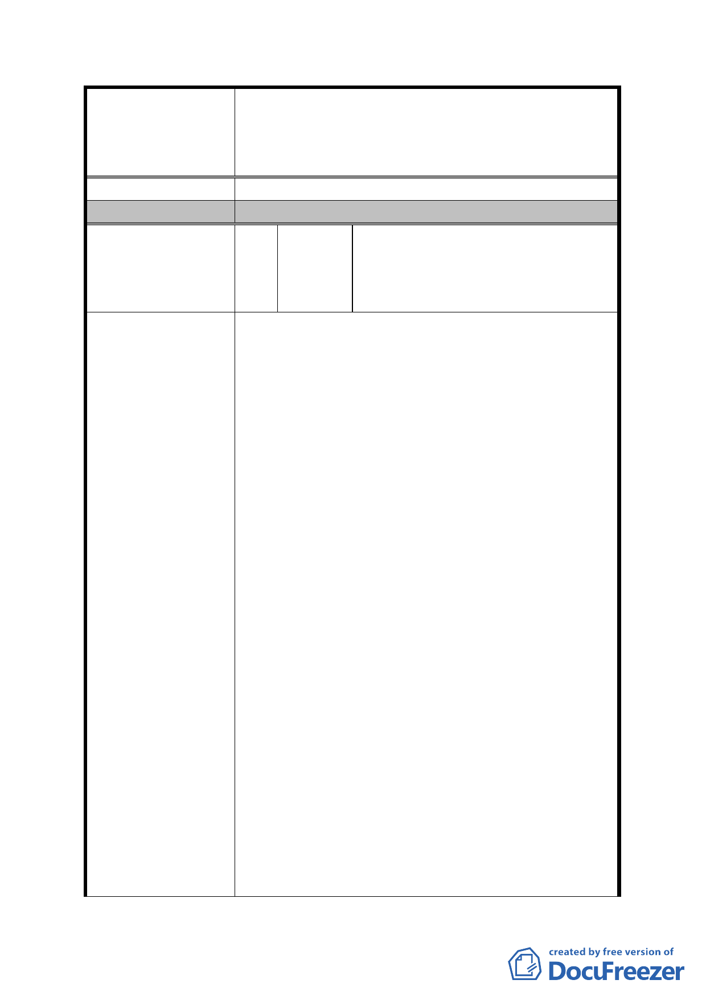

案名
發展局回應意見
委員會決議
編號
陳情理由
擬定臺北市內湖區蘆洲里附近工業區細部計畫暨變
更第 2 種工業區為科技工業區 B 區(特)、科技工業
區 B 區、道路用地、護坡用地及變更工業區(供輕工
業使用)為科技工業區 A 區(特)計畫案
同細計編號 2。
同編號 2 決議二及編號 5 決議三。
內湖區蘆洲里辦公處陳明霖里長、內
10
陳情人
湖區林前區長金子、內湖民眾服務社
李理事長春松、臺北市政府謝市政顧
問欽宗等人連署
為期臺北市內湖區蘆洲里細部計畫變更案能如期成
功，令改善該地區窳陋髒亂之政策得以落實，為 2010
年台北好好看加分，本區住民及土地所有權人陳情
如下：
一、 自該地區之細部計畫公展以來，里民群情嘩
然，本區雖髒亂、窳陋，但 65%以上均是有建
照、使照之合法廠房及住宅。因垃圾山、焚化
爐存在 30-40 年，長期以來居民所受之委屈，
未曾得到任何合理補償；如今因垃圾山、焚化
廠等二處阻礙本區域發展之惡瘤即將走入歷
史之際，都市發展局規劃單位不僅未能體察民
怨，又採前所未有的在都市計畫已公告實施之
地區，進行變更主要計畫增加道路、公園等公
設，再行推動重劃，導致區內地主土地面積縮
水 45%，被劃定為住宅區部分之土地只維持原
200%容積率，更是土地面積平白損失 45%，雖
工業區給予 364%之容積率，但造成高強度使用
之壹樓可建面積（尤其是工業區）嚴重縮水
45%，原有區內 50-60 戶之原住宅住戶將無厝
可居，造成二度傷害，將來地政處重劃單位推
動重劃，勢必困難重重，落實市政建設，改善
本區市容環境之德政將難以達成。
二、 以上所述之財產縮水情形與現今採行的「都市
更新」、「2010 年臺北好好看」之專案、或者「工
業區」變「住宅區」之大財團專案，所享有之
容積優惠等相比，可謂天壤之別，試問本區近
10 公頃三大街廓之完成整治，其對臺北市市容
- 36 -